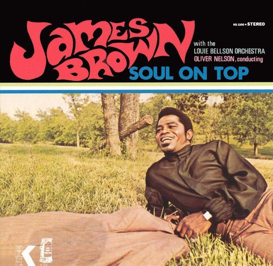
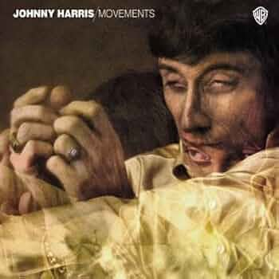
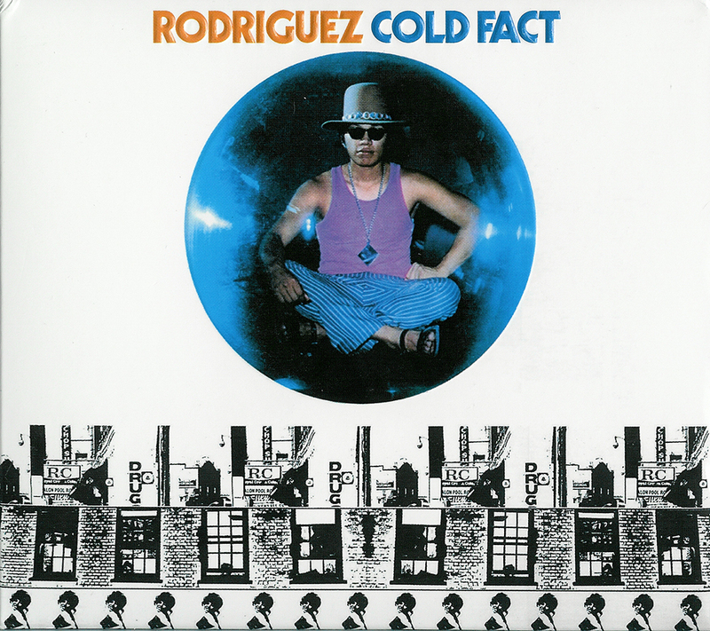
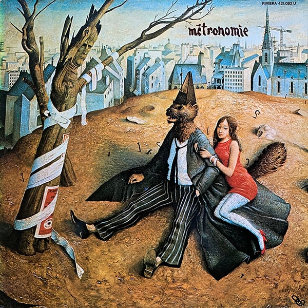
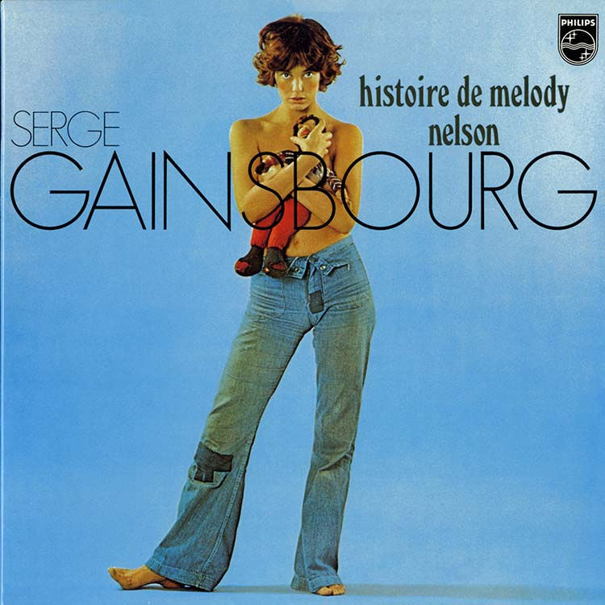
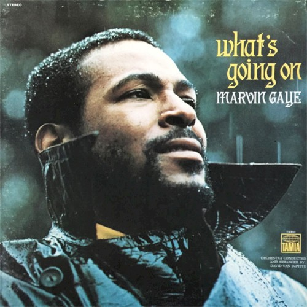

275 disques,
un à la fois.
Je parcours les albums de La discothèque idéale de FIP sans chercher à écrire des critiques définitives. Juste ce qui se passe pendant l’écoute : les détails qui accrochent, les moments qui résistent, les rapprochements inattendus.
Explorer
12 albums


Soul on Top
James Brown · James Brown face à un grand orchestre : parfois deux langages qui finissent par se rejoindre.

Movements
Johnny Harris · Rock progressif, musique de film, soul : une direction artistique qui change constamment de décor.

The Awakening
Ahmad Jamal Trio · Une virtuosité sous tension : admirable, parfois dérangeante, sans toujours me happer.


Cold Fact
Sixto Rodriguez · Une folk simple traversée d’étrangetés, avec un morceau qui m’a mis une claque rare.

Métronomie
Nino Ferrer · Un Can / Yes à la française : élégant, dénonciateur, très bien composé.


Histoire de Melody Nelson
Serge Gainsbourg · Un monument formel que je n’arrive plus vraiment à habiter.

What’s Going On
Marvin Gaye · Un disque sublime à habiter, un peu moins immédiat à chanter.

La Question
Françoise Hardy · De la chanson française passée à travers une bossa nova mélancolique et cinématographique.

Aucun album ne correspond à ces filtres.